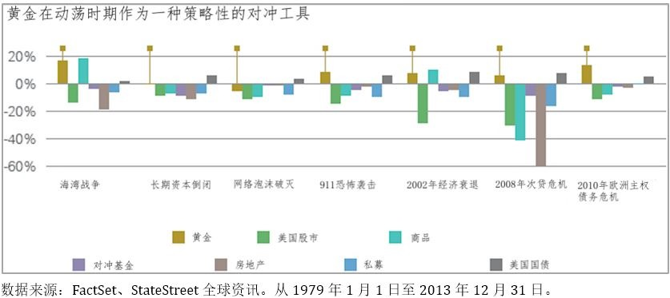
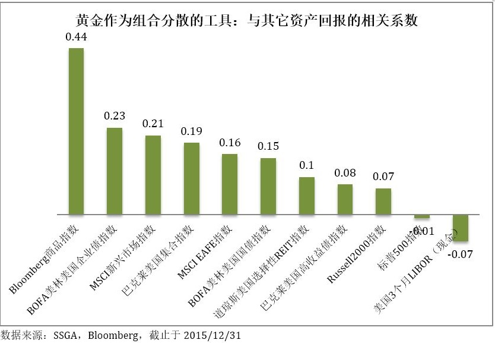
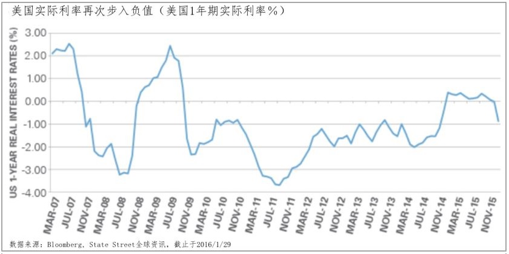
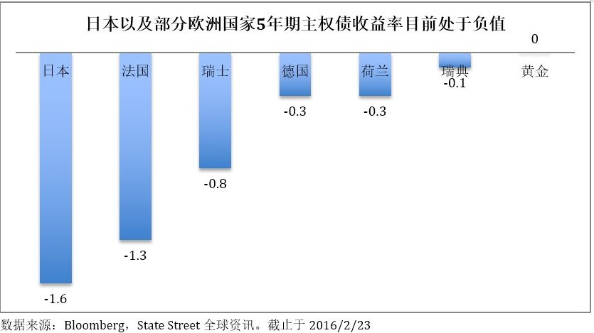
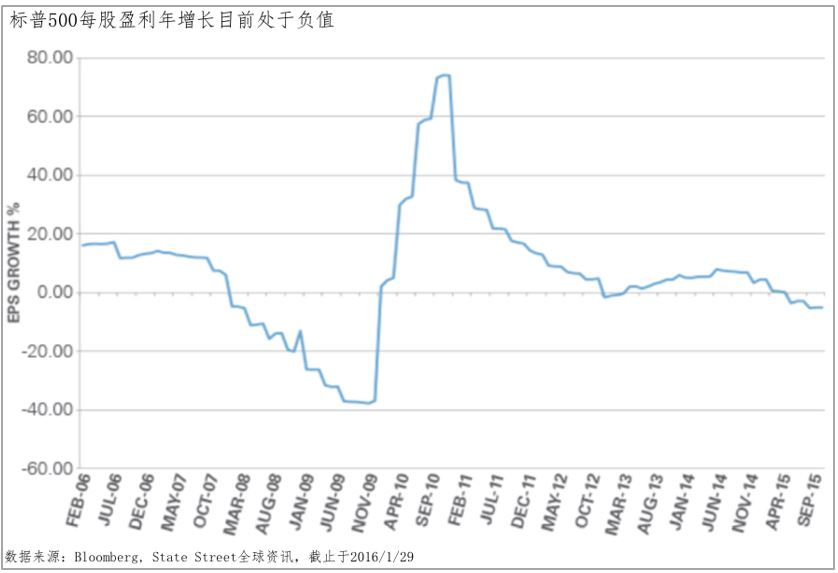
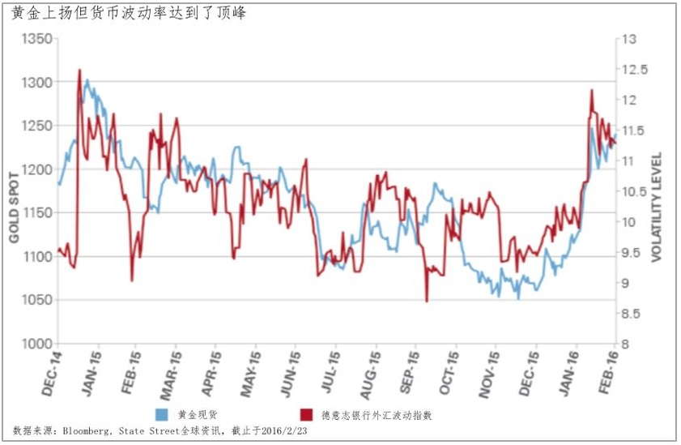
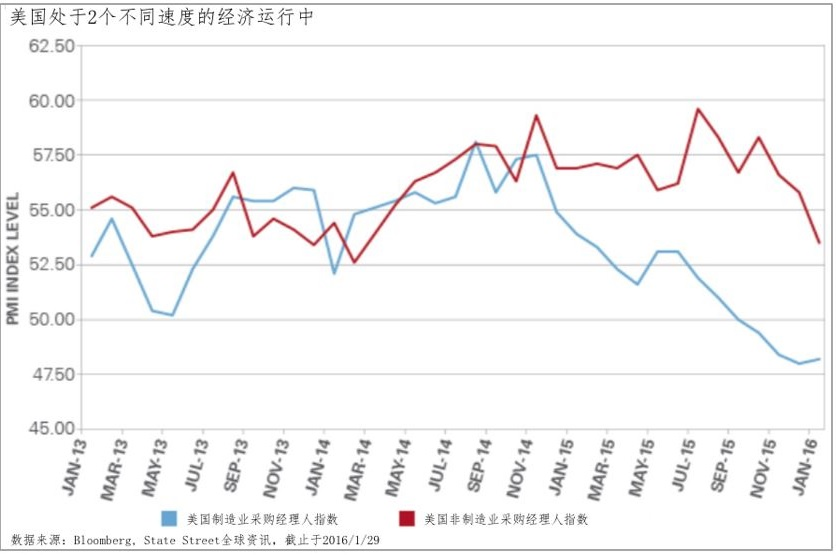
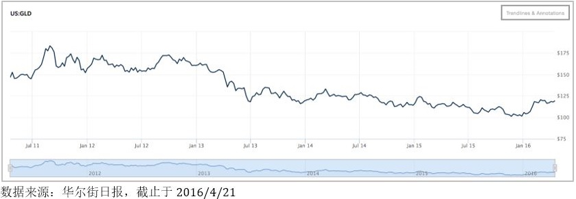
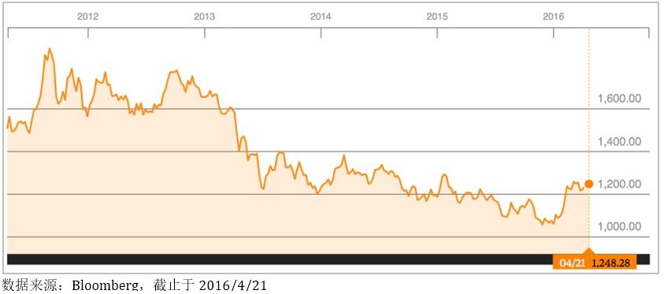

这几天，上海金集中定价合约正式挂牌的消息传遍整个市场。对于专业投资者来说，期待着多一个机会运用量化交易、策略交易进行跨市场套利，而对于普通投资者来说，今后只要看国内市场的价格就能买卖黄金了。
上海金是否就能马上成为伦敦金的强有力竞争者？这个并不在本文分析的范围，但可以预知的是，上海金最终具有与伦敦金一样的定价权还有一段路要走，与上海金相关的黄金衍生产品更需要不断丰富。
上海金的出现并不意味着投资者可以忽略全球黄金市场的存在，投资者更需要关注全球黄金投资的宏观背景与行为方式，这样才能避免盲目保值或投机带来的资产损失。
中国人喜欢购买与收藏黄金已为世人所知。自古就有“金屋藏娇”一说，可见黄金在国人眼里是身份与财富的象征。那么，黄金是否值得你一直持有？
本文从黄金投资配置以及黄金在不同时期表现的角度对这一问题加以分析，并试图更为直观地为黄金投资者提供审视自己投资的判断能力并在投资决策中合理地安排自己的投资配置。
内容摘要：
黄金可以帮助管理市场风险与波动：投资者可以通过在组合中配置黄金资产分散组合风险与波动 － 一种与其它资产，如：股票、债券与商品，相关性较低的副产品。事实上，在过去的25年，黄金与股票、债券及其它商品的相关系数分别为：-0.01、0.19及0.44。
黄金可能帮助到保持购买力：黄金的价格被多种因素影响，从央行政策及利率到新兴市场需求与金矿开采生产。黄金的价格受到全球性的因素驱动，而非单纯的国内事件驱动，因此，在本国货币贬值期间，黄金的价格受到支撑，并且能起到全球通胀时的对冲作用。
黄金在资产配置中的地位
除了战争与动乱之外，黄金通常在通胀以及美元持续弱势的状况下是绝好的配置资产。此外，对于经济前景的担忧以及动荡的资本市场也往往会带来黄金的投资机会。
目前的经济前景与资本市场正是处于这种状况之下 － 新兴市场国家以及欧洲正处于经济衰退的边缘。年初全球股票市场的大跌使得标普500指数录得自2009年以来最差的1月表现。与此相反，黄金却获得了4%的涨幅。
动荡不安的市场使得投资者有机会重新审视黄金在投资组合中扮演的战略性角色：
黄金在动荡时期扮演组合风险对冲的角色
目前市场存在三大担忧：
- 中国经济增长减速的担忧
- 原油供给过剩对油价进一步打压的担忧
- 不断上升的对于能源与大宗商品企业违约与倒闭的担忧
下图展示了黄金在包括海湾战争、长期资本倒闭以及美国次贷危机在内的动荡时期的市场表现。在下列7次事件中，黄金在其中的5次表现第一或第二。这表明，黄金给投资者提供了一个财富保值以及平衡市场波动的工具。
黄金作为组合分散的潜在能力
组合分散的目的在于持有一组资产，并且能在不同的市场状况下彼此表现不同。数据显示：股票市场在动荡时期相关性变得更为紧密。以此相反，黄金在这样的时期与主要资产的相关性并不太强。
下图展示了黄金与其它主要类别资产的相关性，包括其它大宗商品。这表明：把黄金作为一个单独的资产类别加以配置会分散组合的总体风险。
结论：
从长期来看，在投资组合中配置黄金资产不但有利于组合风险的分散与平抑组合中股票资产的波动，同时还有利于提升组合收益。组合中比较适度地配置黄金资产的比例大致在2%至10%之间。
5张图看懂黄金目前的上涨
在上文中，我们已经提到黄金在整个资产配置中的重要性。黄金无疑是被作为安全或“避险天堂”的资产。在接下来的分析中，让我们看看除了“避险天堂”之外，投资者持有黄金的理由。
对于“零收益”的认知
黄金资产并不会产生任何收益，因此黄金的收益率曲线为零。因为如此，利率上升的环境会抑制对黄金的需求。然而，下图中美国实际利率与主权债利率的走势会解释为什么投资者对待黄金的态度正在改变。
当股票市场动荡、经济前景暗淡以及美国货币政策不明朗之际，投资者挣扎于寻找更高品质的资产。不断上升的对固定收益类资产的需求一而再地压低债券的收益率。当考虑到通胀的因素，实际利率已经在过往的几个月处于负值，这表明通胀率高于名义利率。
在美国以外的市场，收益率曲线变得更为不堪。在日本，5年期名义收益率目前处于-1.6%，这表示：当投资者购买日本国债时，他们实际上在支付日本政府利息！在欧洲，情况并不见得比日本好。这些都在解释为什么零收益已经不再是阻碍投资者投资黄金的障碍。
被遗忘的资产？
当投资者追逐股票市场的回报时，往往会遗忘黄金，但一旦股票市场停止提供收益，投资者就会把他们的注意力转移至其它可选择资产。如下图表明，美国企业的每股盈利增长在金融危机之后处于上升势头，推动了股市的回报。
在最近的几个月，由于强势美元以及全球需求的疲弱使得企业盈利能力受到制约并导致每股盈利增长开始进入负值。
尽管企业每股盈利的下跌是因为油价下跌的拖累，投资者仍然把此视作7年牛市结束的信号。这是另一个黄金再次被视作对冲股组合中票价格波动风险潜在方式的理由。
行舟于暗流涌动的水面
死亡、税收与波动似乎是2016年唯一能够确认的几件事！全球央行联合试图通过持续的非常规货币政策重新点燃增长与通胀，但却给货币的波动带来压力。英国可能的退出欧盟以及对于可感知到的安全天堂资产(比如：黄金)的需求已经在市场参与者中变得无比重要。
关于存在两个不同经济的传说
有证据表明，当前美国正经历着“两个不同速度“的经济。制造业与非制造业的基差正大于平均值。如下图所示，这两个部分自从去年以来都处于下跌趋势，但制造业正经历着更陡峭的下跌并处于采购经理人指数(PMI)50之下，而这正显示工业的衰退期。
两个不同速度的经济使投资者纠结于我们是否面临美国经济的衰退。如果经济的一个部分已经进入衰退区域，那么我们不会感到惊讶投资者可能会猜想经济的另一半也正迈向衰退的方向。这也完全符合投资者偏向黄金的胃口。
最后，让我们来回答本文开始时的问题 － 黄金是否值得你一直持有？
答案是显然易见的！如果你对黄金的投资是作为应对不利的市场状况，如：股市步入熊市波动加剧、通胀发生、货币贬值以及作为资产配置的重要一部分，黄金值得你一直拥有。如果你对黄金的投资只是作为获取短暂的投资收益，或仅仅为了投机，你需要谨慎考虑。
相关黄金交易品种推荐：
SPDR Gold Shares (GLD)(中文简称“SPDR黄金信托份额”)是一种在交易所买卖的黄金信托资产份额。其价格紧跟黄金现货买卖价格，其通常买卖价格是黄金现货价格加上极少量的信托费用以及券商佣金。
GLD提供给投资者现货黄金实物资产不曾具备的优势，如：没有实物储存、运输与安全等问题、没有交易量的限制、具有极大的流动性(每天交易金额达10亿美元)、资产极为安全(汇丰银行为SPDR黄金信托基金黄金资产的托管方)、价格透明以及极低的交易成本(交易价格通常为黄金现货价格加上0.01%的费用，而1盎司黄金实物的价格通常是现货价格加上5%的费用)。
下图分别为SPDR黄金信托份额与现货黄金的走势图。图中不难看出两者走势非常接近，前者的交易价格目前接近125美元一份，而后者目前的交易价格接近1,250美元1盎司。这表明现货市场的每盎司黄金在SPDR信托份额中被拆成将近10份，这更有利于普通投资者的黄金投资。
需要更多了解SPDR黄金信托份额，请联系：spdrgoldshares.com，或可向“赚洋钱”了解相关情况。

“赚洋钱”提供的上述观点与资产并不构成对你的投资建议。投资者需要进一步了解相关产品的详细信息。若要关注更多的市场分析，请关注“赚洋钱”微信公众号的“投资策略”栏目。